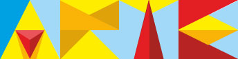
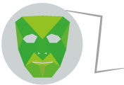

<!DOCTYPE html>
<html lang="en"></html>
<head>
  <meta charset="UTF-8">
  <meta name="viewport" content="width=device-width, user-scalable=no, initial-scale=1.0, maximum-scale=1.0, minimum-scale=1.0">
  <link rel="stylesheet" href="">
  <link rel="stylesheet" href="css/bootstrap.min.css">
  <link rel="stylesheet" href="css/style.css">
  <title>Flix artista urbano venezolano</title>
</head>
<body>
  <div class="pattern">
    <div class="container-fluid">
      <video src="video/flix-flix.mp4" autoplay loop></video>
      <header>
        <div class="logo"></div>
        <div class="menu"><a class="cd-nav-trigger"><span class="glyphicon glyphicon-menu-hamburger"></span></a>
          <p>Menú</p>
        </div>
        <div class="cd-nav">
          <div class="cd-navigation-wrapper">
            <nav>
              <ul class="cd-primary-nav">
                <li><a href="#" class="selected">INCIO<br><strong>Ve al Homepage.</strong></a></li>
                <li> <a href="#">ESPACIO PUBLICO<br><strong>Acá encontraras intervenciones urbanas.</strong></a></li>
                <li> <a href="#">EXPOSICIONES<br><strong>Sección dedicada a las muestras en museos y galerías. </strong></a></li>
                <li> <a href="#">BIOGRAFIA<br><strong>Sobre la vida del artista.</strong></a></li>
                <li> <a href="#">CONTACTO<br><strong>Envía tu comentario.</strong></a></li>
              </ul>
              <div class="social">
                <ul>
                  <li class="instagram"><a href="https://instagram.com/flixflix5/" target="_blank"></a></li>
                  <li class="facebook"><a href="https://www.facebook.com/FLIX.FLIX?fref=ts" target="_blank"></a></li>
                  <li class="flickr"><a href="https://www.flickr.com/photos/flixflix/" target="_blank"></a></li><strong>Visita las redes sociales...</strong>
                </ul>
              </div>
            </nav>
          </div>
        </div>
      </header>
    </div>
    <div class="container">
      <div class="first-content">
        <div class="col-md-12">
          <ul>
            <li id="right-content">
              <p>Al intervenir el espacio urbano, con diversos medios, intento romper la monotonía del gris transitar del habitante de la ciudad. <br>El espacio urbano es el escenario en el cual protagonizamos nuestras pequeñas historias.</p>
            </li>
          </ul>
        </div>
        <div class="col-md-12">
          <ul>
            <li id="left-content">
              <div class="bg-ind">
                <p> El Arte abarca iniciativas tan disímiles como el videomapping y las calcomanías. Estas proposiciones apuestan principalmente a la activación de las estéticas urbanas: lo lúdico, lo temporal, la sorpresa sensible, todas tejidas como estrategia para la construcción de nuevos sentidos para vivir e interpretar la ciudad.</p>
              </div>
            </li>
          </ul>
        </div>
      </div>
    </div>
    <div class="wrapper">
      <div class="containaer">
        <div class="row">
          <div class="col-md-6 col-xs-12">
            <h1>Del artista:</h1>
            <div class="image-wrapper"></div>
            <p>"Me interesa generar intervenciones que fisuren la psique del transeúnte, despertándole emociones e inquietudes que evidencien las paradojas y absurdos de las situaciones cotidianas."</p>
          </div>
          <div class="col-md-6 col-xs-12">
            <h1>Formación</h1>
            <div class="image-wrapper"></div>
            <p>Arquitecto graduado de la Facultad de Arquitectura y Urbanismo de La Universidad Central de Venezuela en el año 2002. Realizó estudios de fotografía durante los años de estudio en la Universidad.</p>
          </div>
        </div>
      </div>
    </div>
    <div class="container">
      <div class="second-content">
        <h1>Exposiciones y Participaciones:</h1>
        <div class="col-md-6 col-xs-12">
          <h2>2008</h2>
          <ul>
            <li>Exposición Poster & Sticker Koloni Dresden - Dresden Alemania </li>
            <li>Exposición “CansFestival” Londres, Inglaterra</li>
          </ul>
          <h2>2009</h2>
          <ul>
            <li>Madrid Poster Art 2009 - Madrid España </li>
            <li>Jóvenes con FIA 2009 XII Edición (1er Premio )- Caracas Venezuela</li>
            <li>Exposición "Artefactos" Puto Bar - Caracas Venezuela </li>
            <li>Festival de arte "Imaginario" Universos Urbanos - San Cristóbal Venezuela</li>
          </ul>
          <h2>2010</h2>
          <ul>
            <li>Exposición Caracas Street Art 2010 - El Hatillo Venezuela </li>
            <li>Festival "Interviniendo La Pastora 2010" - Caracas Venezuela </li>
            <li>Festival Chacao "Por el Medio de la Calle" 2010 - Caracas Venezuela </li>
            <li>Livingwalls Conference Street Art & Urbanism 2010 - Atlanta Usa </li>
            <li>Exposición "Artefactos" Barra Bar - Caracas - Venezuela </li>
            <li>Festival Cultura Hip Hop 2010 - Caracas Venezuela</li>
          </ul>
          <h2>2011</h2>
          <ul>
            <li>Festival "San Agustín Aereo 2011" - Caracas Venezuela </li>
            <li>Streetart Exibition "48 Stunden Neukölln" - Berlin Alemania </li>
            <li>Exposición “Caracas Street Art 2” 2011 - Caracas Venezuela</li>
          </ul>
        </div>
        <div class="col-md-6 col-xs-12">
          <h2>2012</h2>
          <ul>
            <li>Exposición Colectiva "Los Nómadas" ONG Organización Nelson Garrido - Caracas Venezuela</li>
          </ul>
          <h2>2013</h2>
          <ul>
            <li>Exposición Colectiva "El Arte es Emoción" Centro de Arte Los Galpones - Caracas Venezuela </li>
            <li>Exposición Colectiva “Paralelos” Galería D´Museo </li>
            <li>Exposición Individual “Dinamismo Geométrico” La Casa 22 </li>
            <li>Exposición Colectiva Día de Los Muertos “Kalakara” Galería Bodet, México.</li>
            <li>Exposición Colectiva “Entre Líneas” Galería Paréntesis. Caracas.</li>
          </ul>
          <h2>2014</h2>
          <ul>
            <li>Exposición Colectiva “Tres en uno” Galería Paréntesis. Caracas. </li>
            <li>Exposición Colectiva “CARACAS 2014” Galería D´Museo. Caracas.</li>
          </ul>
          <h2>2015</h2>
          <ul>
            <li>Exposición Colectiva “PROPOSICIONES ABSTRACTAS” Galería D´Museo. Caracas. </li>
            <li>Exposición individual “ESPACIO HABITABLE”, Galeria GRAPHICART, Caracas. </li>
            <li>Exposición “TE DOY MI PALABRA” PABELLON DE VENEZUELA, 56ª Bienal de Arte de Venecia, Italia 2015</li>
          </ul>
        </div>
      </div>
    </div>
  </div>
  <footer>
    <div class="container">
      <p class="text-center">Producido por estela estudio de diseño 2015.</p>
    </div>
  </footer>
  <script src="js/jquery-2.2.3.min.js"></script>
  <script src="js/bootstrap.min.js"></script>
  <script src="js/show-menu.js"></script>
</body>